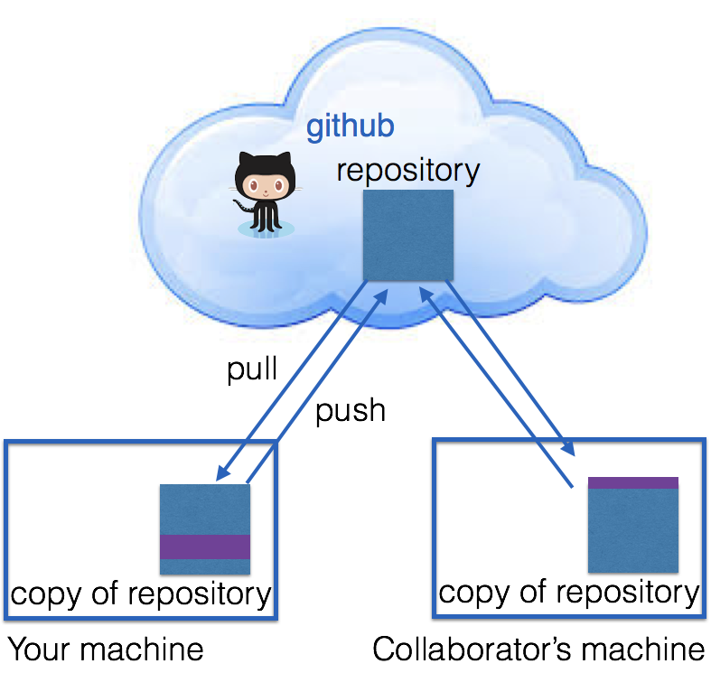

DS 202 - git and github
Yumou
What is git?
- Git is a version control system that was created to help developers manage collaborative software projects. Git tracks the evolution of a set of files, called a repository or repo.
- This helps us
- merge conflicts that arise from collaboration
- rollback to previous versions of files as necessary
- store master versions of files, no more
paper_final_final_I_really_mean_it.docx
How? …Branching

GitHub
GitHub is one of many hosting services (others are e.g. Bitbucket, GitLab, etc.).

Your Turn (5 min)
This Your Turn is just a prep to get ready for the lab later. It’ll take a couple of minutes of your time, but may need to wait for email confirmation from github …
Here goes: Do you have a github account?
- No? Create a free account at https://github.com/
- Yes? Then log into it.
- Do you remember your login and password?
Git Terminology
from github glossary
- Repository: the basic element of git - like a project’s folder. A repository contains all of the project files, and their revision history. One person owns a repository, multiple people can collaborate. Can be either public or private.
- Remote: This is the version of something that is hosted on a server. It can be (and usually is) connected to a local clone.
- Clone: A local copy of a repository that lives on your computer instead of on a website’s server somewhere
- Fork: a remote copy of a repository stored under your account. Forks allow you to freely make changes to a project without affecting the original(master).
Terminology (cont’d)
- Pull: When you are fetching changes from the remote repository and merging them with your local clone.
- Commit: A checkpoint for the local clone to save changes to a file (or set of files). Every time you commit, git creates a unique ID that allows you to keep record of what changes were made when and by who.
- Push: Sending your committed changes to the remote repository.
Terminology (cont’d)
- Pull Request: Proposed changes to a repository submitted by a user and accepted or rejected by a repository’s collaborators.
- Issue: Issues are suggested improvements, tasks or questions related to the repository.
Repositories
By default, all materials on GitHub are public. This is good because you are getting your work out there and contributing to the open source community!
If you need private repos, checkout GitHub for Education - free private repos for students/postdocs/professors.

Looking ahead …
In this class we will use git & github for
- lab assignments, and
- the projects.